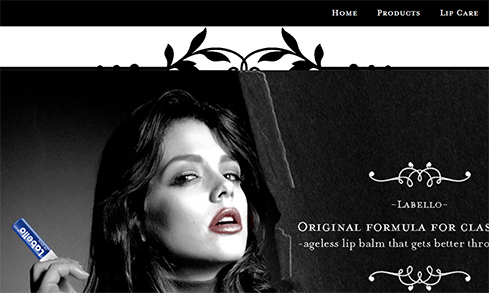
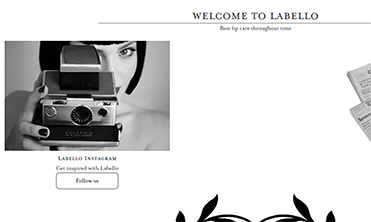
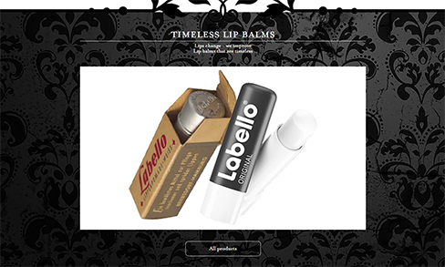
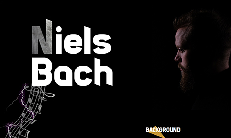
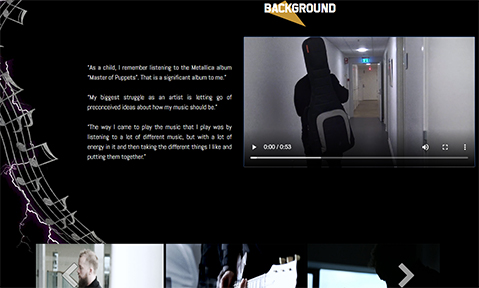
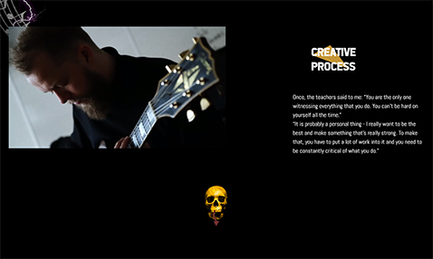
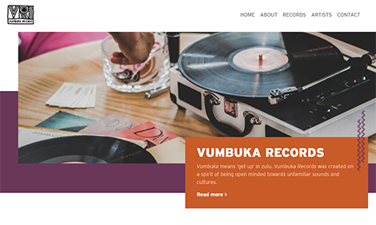
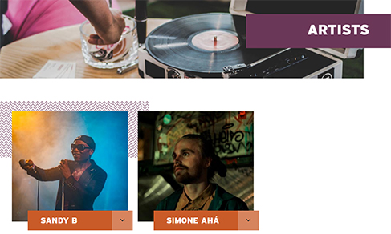

Gallery









Studying in Aarhus Business academy, Multimedia design and communication I learned Photoshop and coding (HTML, CSS, JavaScript). We got to work on more than 7 projects where I worked with coding, design and also User Experience. Our studies focus a lot on Team work, which is why I am confident that it will not be a problem for me to work in team settings, although I am able to work alone aswell. Front-end development is where I want to focus on, creating something new and different when you can see the result is really fulfilling, in the mean time you would be sure to get honest and hard working employee that is not afraid of hard work and always determined to learn new things and improve.
I enjoy photography and as an art bachelor I have good sense of esthetics that will come in handy in such work. My imagination is unlimited. I usually can turn any idea or product into something new and different implementing marketing and research. I love to share ideas and hear others, because I love to see other perspectives and outlooks. Learning from experienced people and working in real business environment will not only help me as a student in my studies but in my future career and I wish I can be a part of your team.
Download ResumeThrough my studies I was able to get familiar with coding. I improved my knowledge in HTML, CSS and JavaScript. That is why I have decided to take my third semester in Front-end development. During these one and a half years I was able to improve by making different websites and even web applications. Having a great eye for details I can spot mistakes in the code and move on with the work. Front-end development is exactly where I want to improve.
My passion for design was what got me to web development in the first place. During my art school studies I was able to improve my aesthetic feeling. Now when I create websites, I can use my knowledge of Photoshop and improved visualisation skills. I can use contrast using shapes, text, colors, textures, white space, positions. The use of icons as new type of language for the users.
As a Web developer I need to understand the user. Through my studies I was able to work with a lot of different companies, businesses and clients. Each and one of them had different target group which we had to apply our solutions to. During this process I have learned to get out of my nerdy shell and ask questions. UX/UI really takes you out of your comfort zone. Gathering data and creating a solution has really helped me as a Front-end developer to see the importance of User Experience.
Because of my love for computers since very young age one of the main hobbies that stayed since this day is gaming. Great gaming memories from my childhood include "GTA", "Worms", "Need for Speed", "CS: GO", "RuneScape" and many others. Because of such change in the gaming industry now I do not spend as much time playing games as I used to, but still feel love for games and play "Hearthstone" during my free time. Also, I have acquired love for board, card games and of course D&D.